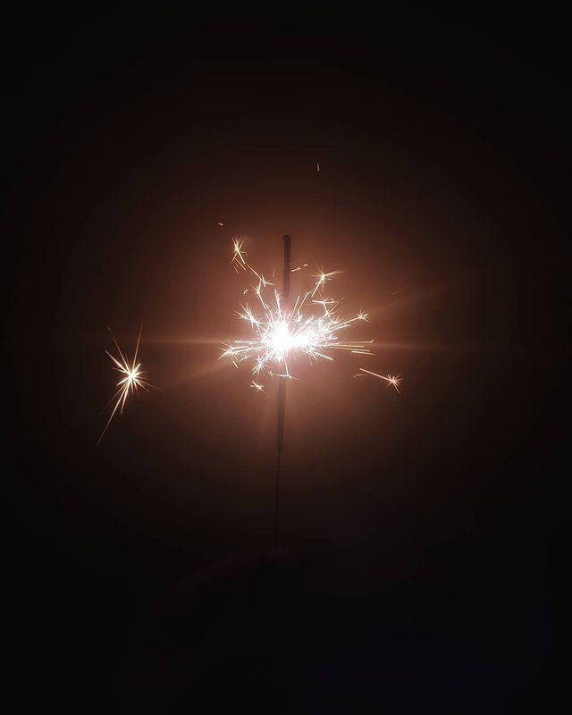
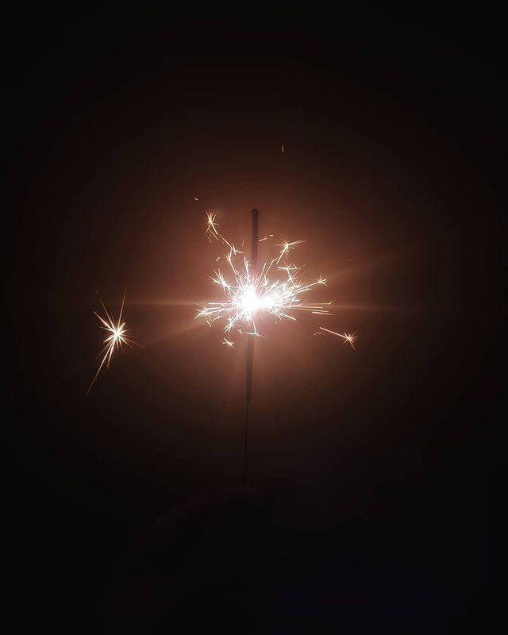

Designer Gráfico | Identidade Visual | Social Media | Conteúdo Digital
Sou uma designer proativa, organizada e apaixonada por criar soluções visuais criativas e estratégicas. Busco sempre aprender, crescer e colaborar em projetos inspiradores.
Desenvolvimento da nova identidade visual da marca. Criação de peças gráficas para redes sociais, com foco em comunicação climática e engajamento digital. Apoio visual a campanhas e projetos especiais.
Criação de artes visuais para redes sociais, identidade visual e materiais gráficos diversos. Responsável por todo o processo criativo: briefing, conceito, produção e finalização.


Para mim, fotografia é arte e memória ao mesmo tempo. Amo brincar com luz, cor e perspectiva para criar imagens que falam por si. Aqui, estão alguns dos meus registros prediletos.
 
